材料 5個分
※粉量を変えると自動計算されます
生地
トッピング・包み用
重曹液
作り方
生地
STEP 1
ホームベーカリーで生地を20分こねる
ホームベーカリーに材料をセットして「生地コース」を選び、生地をこねます。一次発酵が始まる前に生地を取り出し、次の工程へ進みます。
ホームベーカリーに材料をセットして「生地コース」を選び、生地をこねます。一次発酵が始まる前に生地を取り出し、次の工程へ進みます。
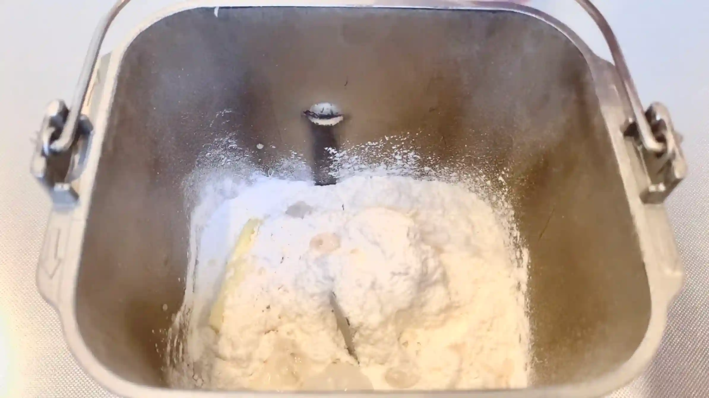
STEP 2
生地を5分割して丸め、ラップをして室温で20分おく
ここで休ませることで生地がゆるみ、この後の成形がしやすくなります。米粉入りの生地は無理に伸ばすと裂けやすいため、ここで休ませるのがポイントです。
ここで休ませることで生地がゆるみ、この後の成形がしやすくなります。米粉入りの生地は無理に伸ばすと裂けやすいため、ここで休ませるのがポイントです。
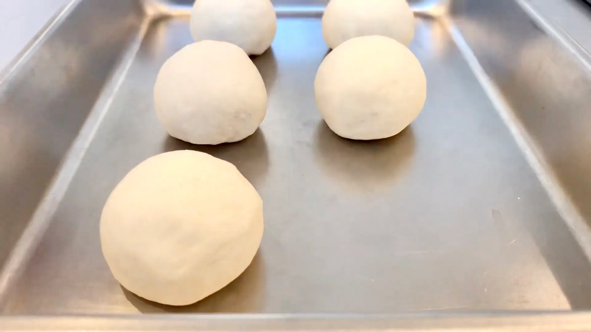
STEP 3
生地を15㎝×10㎝に伸ばし、バターをのせる
めん棒を使って生地を楕円に伸ばし、3gずつ細長く切ったバターを伸ばした生地の上側に置きます。
めん棒を使って生地を楕円に伸ばし、3gずつ細長く切ったバターを伸ばした生地の上側に置きます。
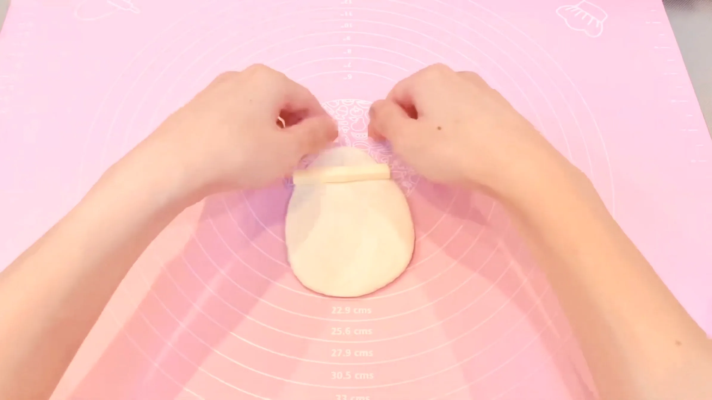
STEP 4
バターを包み、生地を張らせながら巻いていく（[動画 01:52]）
バターを芯にして、生地を軽く張らせるようにしながら巻いていきます。両端はそのままにして、生地のとじ目をしっかり閉じます。
バターを芯にして、生地を軽く張らせるようにしながら巻いていきます。両端はそのままにして、生地のとじ目をしっかり閉じます。
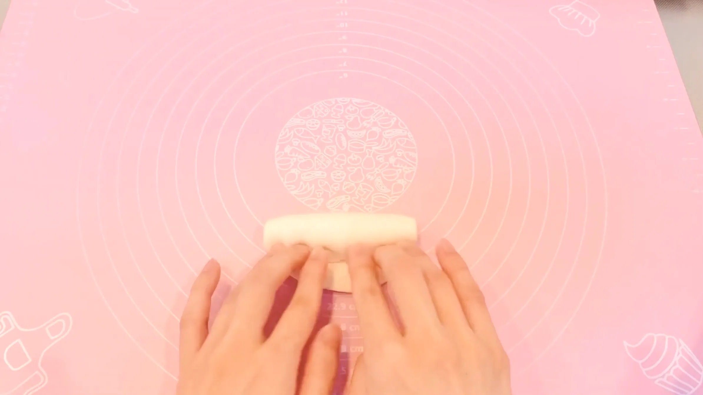
STEP 5
生地の真ん中には触らず、両端を伸ばして全体を45㎝にする（[動画 02:19]）
中央部分のバターにはできるだけ触らず、生地の両端を転がすように少しずつ伸ばして、全体を45㎝程度の長さに整えます。利き手側は力が入りやすく、生地が伸びやすいので、両手に均等に力をかけながら少しずつ伸ばすのがおすすめです。
中央部分のバターにはできるだけ触らず、生地の両端を転がすように少しずつ伸ばして、全体を45㎝程度の長さに整えます。利き手側は力が入りやすく、生地が伸びやすいので、両手に均等に力をかけながら少しずつ伸ばすのがおすすめです。
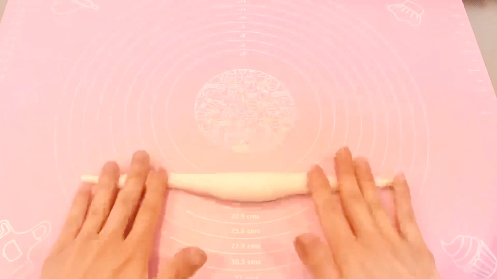
STEP 6
伸ばした両端の生地を上に持っていき、交差させる（[動画 03:21]）
両端を持ち上げて中央付近で交差させ、プレッツェルの形を作っていきます。
両端を持ち上げて中央付近で交差させ、プレッツェルの形を作っていきます。
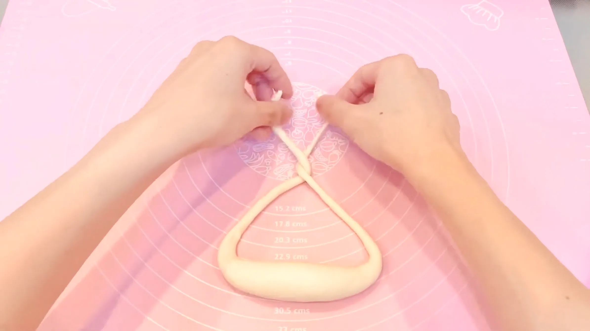
STEP 7
端を手前にくっつけて成形し、オーブンシートにのせる（[動画 03:31]）
交差させた生地の端を手前側に持ってきて、生地同士を軽く密着させます。成形ができたら、重曹液に入れやすいよう生地をオーブンシートの上にのせておきます。
交差させた生地の端を手前側に持ってきて、生地同士を軽く密着させます。成形ができたら、重曹液に入れやすいよう生地をオーブンシートの上にのせておきます。
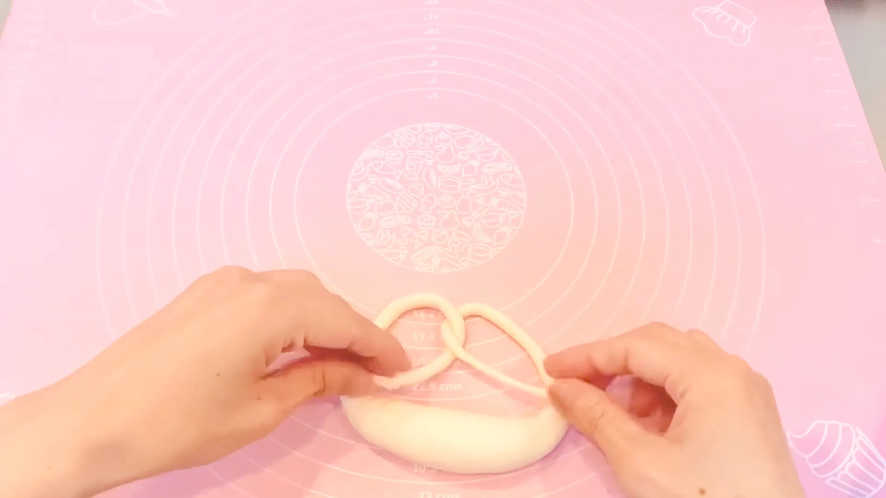
STEP 8
ラップをして、室温で40分おく
ここで生地を発酵させます。ただ、発酵させすぎるとプレッツェルらしい締まった食感が弱くなり、成形した形も崩れやすくなるため、少しふっくらしたくらいを目安に、次の工程へ進みます。
ここで生地を発酵させます。ただ、発酵させすぎるとプレッツェルらしい締まった食感が弱くなり、成形した形も崩れやすくなるため、少しふっくらしたくらいを目安に、次の工程へ進みます。
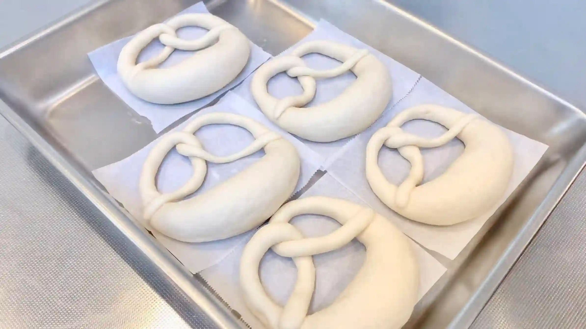
STEP 9
生地を20分冷凍し、その間にオーブンを天板ごと250℃で予熱しておく
成形後の生地を冷やすことで、生地の表面が締まり、重曹液に入れた時に形が崩れにくくなります。また、包み込んだバターが冷えて固まることで、ゆでる際にバターが流れ出しにくくなります。冷凍している間にオーブンを250℃までしっかり予熱しておきます。
成形後の生地を冷やすことで、生地の表面が締まり、重曹液に入れた時に形が崩れにくくなります。また、包み込んだバターが冷えて固まることで、ゆでる際にバターが流れ出しにくくなります。冷凍している間にオーブンを250℃までしっかり予熱しておきます。
STEP 10
お湯（85〜90℃くらい）に重曹を入れ、成形した生地を片面30秒ずつ、計1分ゆでる
本来はラウゲン液を使いますが、今回は手軽な重曹で代用します。重曹液に生地をくぐらせることで、プレッツェル特有の香ばしい焼き色と風味をつけていきます。生地は形を崩さないようにそっと重曹液に入れ、片面30秒ずつ、合計1分を目安にゆでます。
本来はラウゲン液を使いますが、今回は手軽な重曹で代用します。重曹液に生地をくぐらせることで、プレッツェル特有の香ばしい焼き色と風味をつけていきます。生地は形を崩さないようにそっと重曹液に入れ、片面30秒ずつ、合計1分を目安にゆでます。
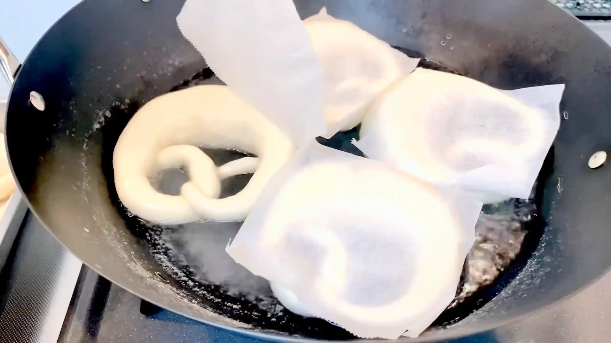
STEP 11
クープを入れ、塩をかける
重曹液から取り出した生地をオーブンシートの上におき、表面にクープを入れます。クープを入れることで、焼成中に生地が膨らむ力を逃がし、焼き上がりにきれいな切れ目が入ります。
重曹液から取り出した生地をオーブンシートの上におき、表面にクープを入れます。クープを入れることで、焼成中に生地が膨らむ力を逃がし、焼き上がりにきれいな切れ目が入ります。
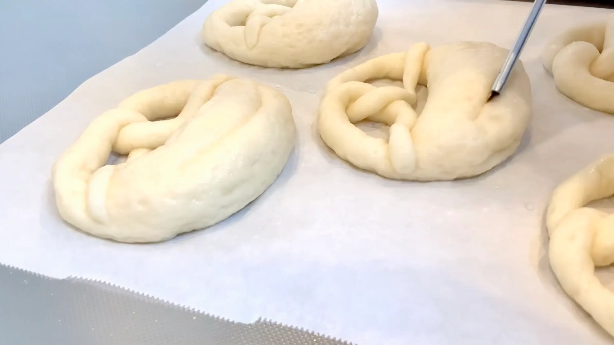
STEP 12
オーブン210℃で20分焼く（[動画 07:13]）
オーブンの天板は熱くなっていて危ないため、牛乳パックなどを下に敷き、スライドさせて生地を入れるのがおすすめです。高めの温度でしっかり焼くことで、表面が香ばしく色づき、プレッツェルらしい風味が出ます。焼き色はオーブンによって差が出るため、20分を目安に表面の色づきや焼き上がりを確認して調整してください。
オーブンの天板は熱くなっていて危ないため、牛乳パックなどを下に敷き、スライドさせて生地を入れるのがおすすめです。高めの温度でしっかり焼くことで、表面が香ばしく色づき、プレッツェルらしい風味が出ます。焼き色はオーブンによって差が出るため、20分を目安に表面の色づきや焼き上がりを確認して調整してください。
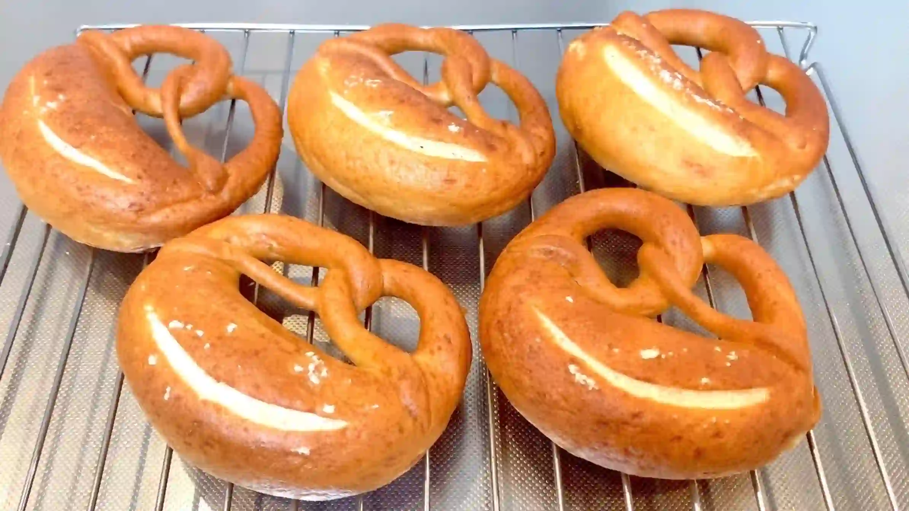
動画でチェック
おいしく作るためのワンポイントコラム
皮はパリッと、中はもっちり、閉じめたバターがじゅわっと広がる『バターインプレッツェル』を作ります！米粉を配合することで、プレッツェル特有のパサつきを抑えて香ばしさもアップ。極上の食感で焼き上げるための「3つのコツ」をまとめました。
① しっとりモチモチを生む生地のコツ
プレッツェル特有のあの香ばしさを持ちつつ、食感はしっとりもっちりを目指したい。そんな時には、強力粉に米粉を20%ほどブレンドするのがおすすめです。米粉ならではの優れた保水力をプラスすることで、皮はパリパリ、中は驚くほどしっとりもっちりとした最高の食感に仕上がります。今回使用した米粉は、グルテンの添加されていない「うるち米100%」のものです。スーパーでも手に入りやすいので、ぜひ探してみてください！
② 成形のコツ
プレッツェルと言えばあの可愛い形。成形はパン作りの楽しみの一つですよね。バターを芯にして生地を横に長く伸ばしていくのですが、きれいに仕上げるコツは、真ん中のぷっくりした部分には触らず、両端の細い部分だけを意識して伸ばしていくこと。こうしてメリハリをつけて成形することで、太い部分はもっちりジューシーに、細い棒の部分はプリッツのようにカリッと香ばしく焼き上がり、一本で色んな食感が楽しめるようになります。利き手の側に力が入りやすいので、逆側も少し意識して、両側満遍なく伸ばすのがポイント。
③ 綺麗な形をキープする冷やしのコツ
成形が終わって40分ほど置いたあと、お湯で茹でる直前に20分ほど冷凍庫に入れるのがおすすめ。繊細なプレッツェルの生地を短い時間でキュッと冷やして締めることで、お湯に入れたときにも形が崩れずくっきりと綺麗なプレッツェル型をキープできます。お湯で片面30秒ずつ茹でるときは、形が崩れないようにそっと優しく扱います。
プレッツェルの成形は生地を長く伸ばすところが難所ですが、今回の米粉入り生地は強力粉だけより縮みにくく、初心者の方でも扱いやすく伸ばしやすいのが嬉しいポイント！中からじゅわっと溶け出すバターとパリもち食感の組み合わせは格別ですので、ぜひ挑戦してみてください。
① しっとりモチモチを生む生地のコツ
プレッツェル特有のあの香ばしさを持ちつつ、食感はしっとりもっちりを目指したい。そんな時には、強力粉に米粉を20%ほどブレンドするのがおすすめです。米粉ならではの優れた保水力をプラスすることで、皮はパリパリ、中は驚くほどしっとりもっちりとした最高の食感に仕上がります。今回使用した米粉は、グルテンの添加されていない「うるち米100%」のものです。スーパーでも手に入りやすいので、ぜひ探してみてください！
② 成形のコツ
プレッツェルと言えばあの可愛い形。成形はパン作りの楽しみの一つですよね。バターを芯にして生地を横に長く伸ばしていくのですが、きれいに仕上げるコツは、真ん中のぷっくりした部分には触らず、両端の細い部分だけを意識して伸ばしていくこと。こうしてメリハリをつけて成形することで、太い部分はもっちりジューシーに、細い棒の部分はプリッツのようにカリッと香ばしく焼き上がり、一本で色んな食感が楽しめるようになります。利き手の側に力が入りやすいので、逆側も少し意識して、両側満遍なく伸ばすのがポイント。
③ 綺麗な形をキープする冷やしのコツ
成形が終わって40分ほど置いたあと、お湯で茹でる直前に20分ほど冷凍庫に入れるのがおすすめ。繊細なプレッツェルの生地を短い時間でキュッと冷やして締めることで、お湯に入れたときにも形が崩れずくっきりと綺麗なプレッツェル型をキープできます。お湯で片面30秒ずつ茹でるときは、形が崩れないようにそっと優しく扱います。
プレッツェルの成形は生地を長く伸ばすところが難所ですが、今回の米粉入り生地は強力粉だけより縮みにくく、初心者の方でも扱いやすく伸ばしやすいのが嬉しいポイント！中からじゅわっと溶け出すバターとパリもち食感の組み合わせは格別ですので、ぜひ挑戦してみてください。


おうちで本格的な焼き上がりに挑戦する、しっとりリッチな『バターインプレッツェル』のレシピです！プレッツェル特有のパサつきを抑え、皮はパリッと中はもっちり、じゅわっとバターが広がる極上の仕上がりに。コラムでは「しっとりモチモチを生む生地のコツ」「成形のコツ」「綺麗な形をキープする冷やしのコツ」の3つのコツをご紹介します。